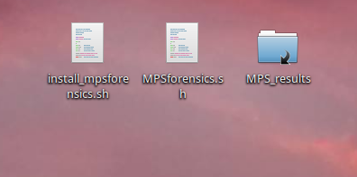

Running the MPS Forensics application is as simple as double-clicking the link provided by the installation script.
When you start the application it will first ensure that the required database and web server are running. These are needed by the visualisation component of the pipeline. After a 30 second delay (to guarantee enough time for these services to start cleanly) the main application is started.
The application is composed of a number of tabs, as shown here:
The first tab is a welcome page that also contains three buttons. There are the "About", "Help" and "Viewer" buttons. Each launches a new tab in the Firefox web browser application. The "About" and "Help" buttons open the "About" and "Help" pages respectively, for the application. The "viewer" button opens a new tab for the data viewer service. The data view is automatically updated at the end of each pipeline run.